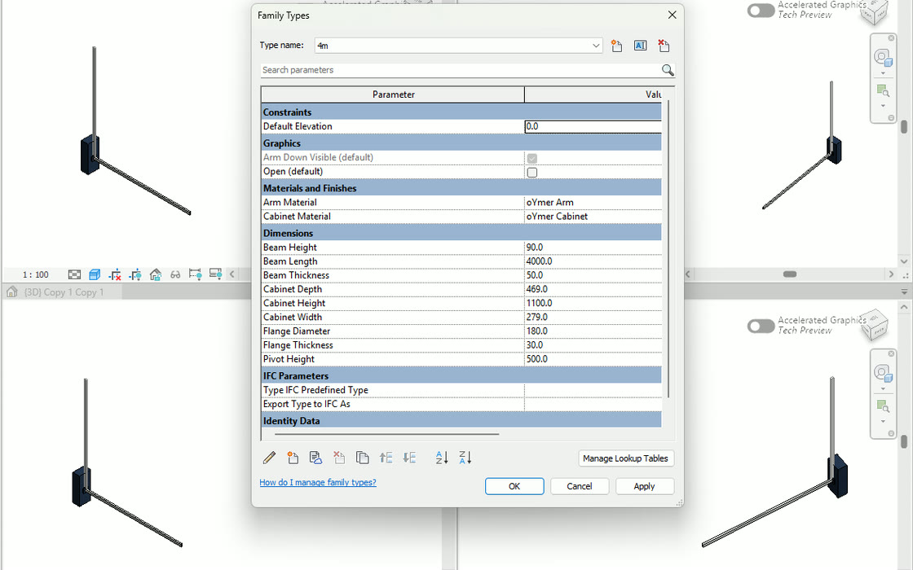
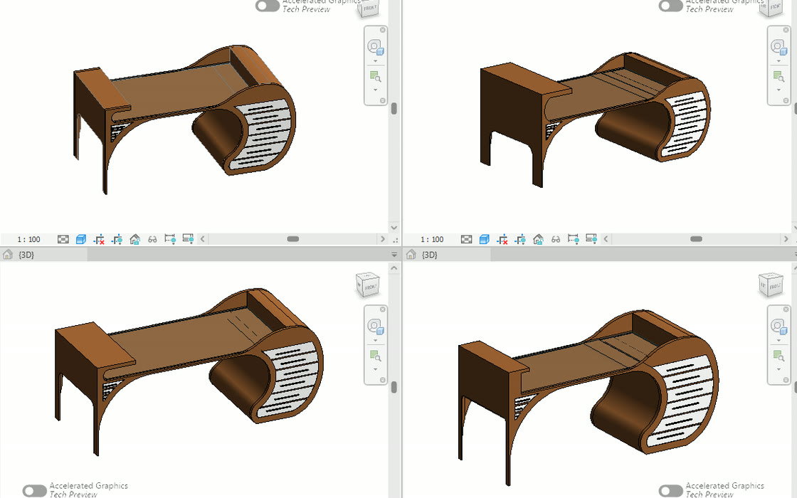

STEP_01
IN REVIT
.RVTWHITE MODELEXPORT
מייצאים את המודל
כפתור אחד בסרגל של רוויט: המודל יוצא כמודל לבן - גאומטריה ומזהים, בלי הכנה ידנית.
כלי עבודה ל BIM מבוססי AI בסביבת VR
שלושה שלבים על ציר אחד. מה שהוחלט בפגישה לא נשאר במצגת - הוא נכתב בחזרה לתוך Revit.
כפתור אחד בסרגל של רוויט: המודל יוצא כמודל לבן - גאומטריה ומזהים, בלי הכנה ידנית.
הלקוח עומד בתוך הדירה שלו: צובע משטחים, מחליף ריהוט ומזיז אלמנטים - וההחלטה נסגרת שם, בפגישה.

ההחלטות חוזרות לתוך המודל - עותק חדש של הקובץ, עם המשטחים והאלמנטים שזזו. המקור לא נגע - והכל בקובץ הרוויט שלך, לא בענן של אף אחד.
המודל נפתח בדפדפן ובמשקפיים בלי רישיון Revit לצופה - ומשם אפשר לבחון משפחה ולהחליף גימור.
המודל ברוויט
להסתובב בתוך המודל, לבחון חלל וחומרים בסביבה הוירטאולית
ארון המטבח כמשפחה פרמטרית - הסוגים והמידות שלה.
אותה משפחה, נפתחת לבד - מסתובבים סביבה ובודקים אותה לפני שהיא נכנסת.
ספריית הגימורים - אותם חומרים שהפרויקט מכיר.
בוחרים גימור ונוגעים במשטח - הוא מתחלף מול העיניים, בתוך הצפייה.
מהאובייקט במעבדה אל משפחת Revit אמיתית - פרמטרית, מדידה, מוכנה לפרויקט.
המשפחה ברוויט - פרמטרית ודינמית. קובץ .rfa אמיתי שנשאר שלך.
יצירה אוטומטית של משפחות חדשות מקטלוג יצרן או מתיאור חופשי
בוחרים משפחה קיימת בפרויקט, מזיזים סרגלים ורואים את השינוי חי - בלחיצה אחת יוצרים טיפוס חדש ישירות ברוויט

יצירת סוגים חדשים מתוך הפרמטרים הרצויים ישירות בתוך הרוויט - הכל רץ על הרוויט שלך, במחשב שלך. שום דבר לא עוזב את המשרד.
שינוי ויזואלי ודינמי של פרמטרים קיימים בזמן אמת
הפרמטרים תואמים לסטנדרט BIM
לא צריך יותר לקרוא ולהבין פרמטרים, רק ללחוץ להזיז ולנסות
צור סיור 360° מטלפון/מודל לדפדפן או ל VR
עומדים מול הקיר, אומרים איך הוא צריך להיראות - והוא משתנה סביבכם, בזמן אמת, בלי לצאת מה-VR.
מעבדת מחקר ופיתוח של מוצרי מציאות מדומה
מימין האובייקט כפי שנבנה במעבדת ה VR, ומשמאל אותו אובייקט עובד בתוך הסיור הוירטואלי
שרביט עץ מגולף שמחליף את דגם הבקר ביד. הניווט בתוך ה-VR צריך להרגיש כמו קסם, לא כמו שלט טלוויזיה.
אותו שרביט, בתוך הסיור: מצביע, בוחר, פותח. הלקוח מחזיק שרביט פשוט להפעלה ולא לומד בקר מסובך.
כוכב ה AI שמשנה בזמן אמת את הסביבה הותאם בגודל ומראה, מידת קפיציות, צבע ושקיפות ועוד
עומדים מול הקיר, אומרים איך הוא צריך להיראות - והוא משתנה סביבכם, בזמן אמת, בלי לצאת מה-VR.
הנקודות החמות (ניווט, מידע, מדיה, אודיו, אופציות תכנון) נבחנות במעבדה בכל גודל ובכל מצב: על הרצפה ועל הקיר, בזוויות שונות ובמהירויות משתנות
אותה נקודה, בתוך הסיור: החיצים מובילים אליה, והיא מתמלאת בהתאם לזמן המוגדר
משפחות רוויט דינמיות: כל פרמטר מזיז גאומטריה אמיתית. נבנות ונבחנות במעבדה, ונכנסות לפרויקט כקובץ .rfa.
מימין האובייקט במעבדה, ומשמאל אותה משפחה בתוך רוויט. מזיזים פרמטר כאן - וזה זז שם.
הארון התחתון בתוך רוויט: פותחים את טבלת הפרמטרים, משנים - והמשפחה זזה. מגירות, מידות, משטח וגימור, הכל מאותה משפחה אחת.
הסליידרים של המעבדה על המסך, וכל אחד מזיז גאומטריה אמיתית: קודם המידות הגדולות של כל היחידות, אחר כך האי, אחר כך עמודת התנור, ולבסוף הארונות.
ארבעה סוגים של אותה משפחה, זה לצד זה: משנים מידה בטבלת הסוגים והגאומטריה זזה. אין במשפחה מספר אחד מת.
אותם פרמטרים בדיוק, אחד אחרי השני: אורך, רוחב ומדף. מושכים סליידר ורואים מיד - לפני שהמשפחה נכנסת לפרויקט.
דגם יצרן אמיתי, וטבלת הפרמטרים לצידו: אורך הזרוע, מידות הארון, ותיבת סימון אחת - Open - שמרימה את הזרוע גם בתוכנית וגם בתלת-ממד.
כאן נבחנת התנועה עצמה: הזרוע נפתחת ונסגרת, והמידות נבדקות מול הדגם של היצרן.
ארבעה מוצרים, קו ייצור אחד - מהמודל ברוויט ועד ההחלטה בתוך ה-VR.
פגישת אישור בקנה מידה 1:1. הלקוח מחליט בתוך ה-VR, וההחלטה נכתבת בחזרה למודל.
BIM VIEWERהמודל הלבן מרוויט, בדפדפן וב-VR - חינם, בלי התקנה.
VR TOURSסיור 360° מהמודל או מהטלפון, לדפדפן ול-VR, עם עורך משלכם.
3D LABהמעבדה שמייצרת את מה שנכנס לשלושת האחרים: אובייקטים ומשפחות Revit.